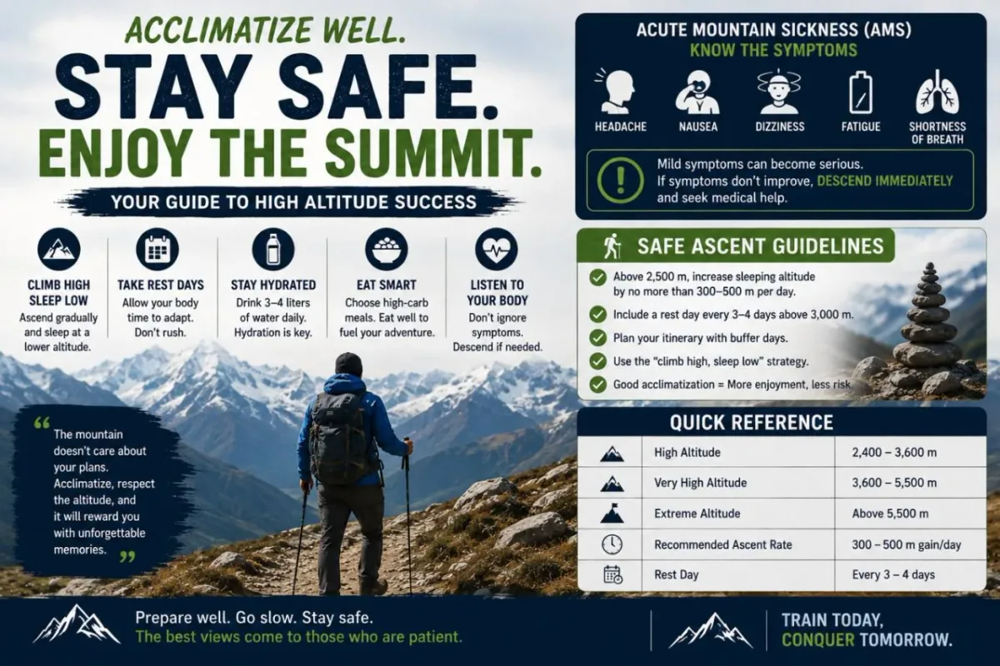
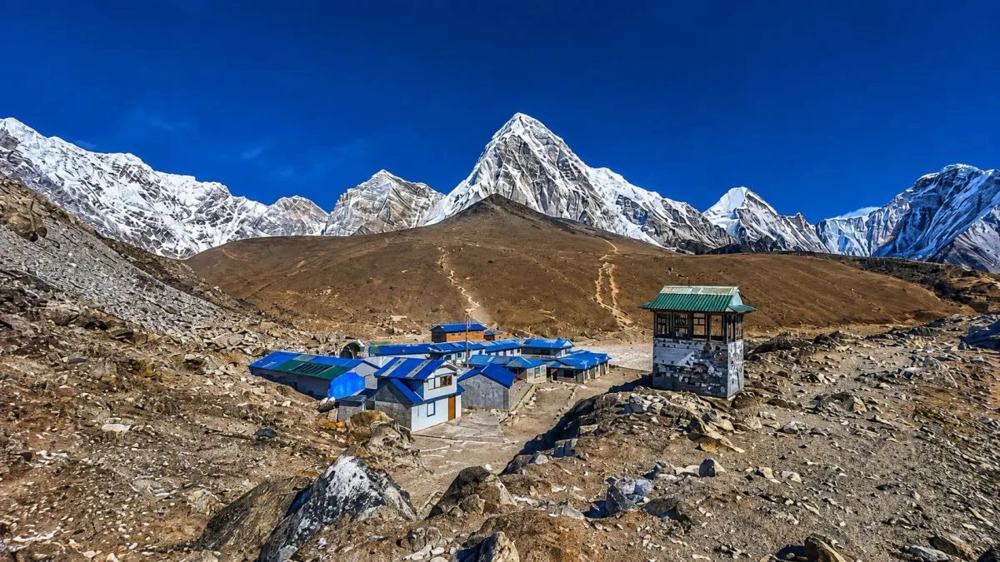
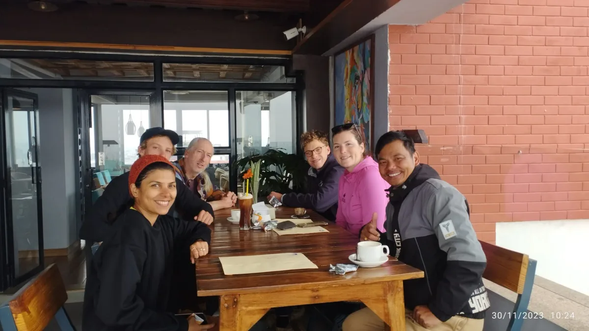
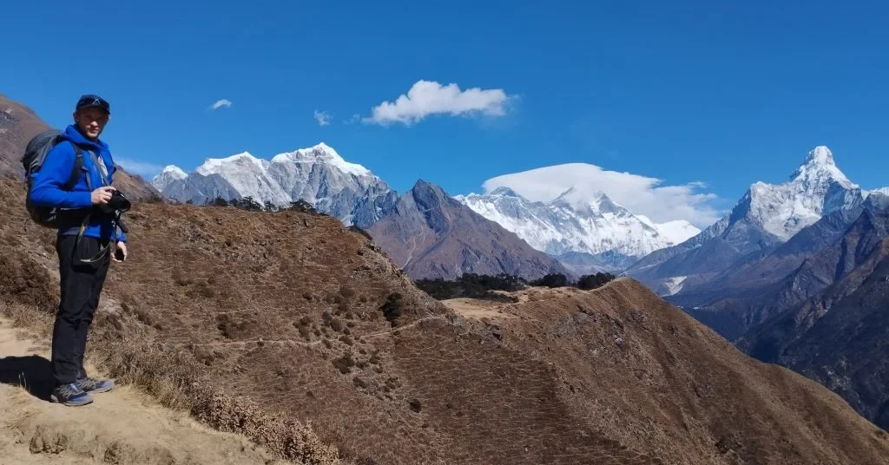

What Is Altitude Sickness: AMS, HAPE & HACE Explained

Altitude sickness is an umbrella medical term encompassing the physiological distress caused by ascending to high elevations faster than your body can adapt to the reduced barometric pressure and available oxygen. In Nepal, where classical routes like the Everest Base Camp Trek and Annapurna Circuit Trek consistently carry walkers above 3,500 meters (11,500 ft) and top out over 5,400 meters (17,700 ft), altitude illness is the primary health factor that determines whether a trekker reaches their goal or requires emergency evacuation.
Clinically, high-altitude illness is divided into three distinct conditions that range from mild, manageable discomfort to rapidly fatal medical emergencies:
- Acute Mountain Sickness (AMS): The mildest and most frequent form of altitude illness. AMS resembles a severe hangover: a throbbing headache (typically frontal or bitemporal), nausea, loss of appetite, fatigue, and lightheadedness. While uncomfortable, AMS is not immediately life-threatening. However, it is an essential biological warning that your acclimatization threshold has been reached. If ignored and ascent continues, AMS can progress into its deadly secondary complications.
- High Altitude Pulmonary Edema (HAPE): A life-threatening medical emergency caused by fluid accumulating within the microscopic air sacs (alveoli) of the lungs. HAPE can occur in otherwise young, fit, and healthy individuals, typically within the first two to four days of reaching altitudes above 3,000 meters. The hallmark symptoms are extreme breathlessness even when resting in bed, a persistent dry cough that progresses to coughing up pink, blood-tinged, or frothy sputum, a rattling sound in the chest, and blue-tinted lips or fingernails (cyanosis).
- High Altitude Cerebral Edema (HACE): A severe, life-threatening neurological emergency where hypoxia causes fluid leakage across the blood-brain barrier, resulting in cerebral swelling and elevated intracranial pressure. HACE is essentially severe AMS that has crossed into brain dysfunction. The classic diagnostic sign is ataxia—loss of motor coordination, manifesting as stumbling, an unsteady "drunken" gait, and inability to walk heel-to-toe in a straight line. Confusion, altered mental status, irrational decision-making, severe lethargy, and hallucinations follow rapidly, progressing to coma and death within 12 to 24 hours if descent is delayed.
Acute Mountain Sickness is your body asking for time to adapt. HAPE and HACE are catastrophic physiological failures where fluid drowns the lungs or compresses the brain. Both HAPE and HACE mandate immediate, non-negotiable descent regardless of weather, time of night, or team schedule.
The Science of Altitude: Barometric Pressure & Hypoxia
A widespread myth among first-time trekkers is that "air has less oxygen at high altitude." In chemical reality, the composition of the atmosphere remains essentially constant up to 20,000 meters: air is always approximately 20.9% oxygen, 78% nitrogen, and roughly 1% trace gases.
What drops dramatically as you gain altitude is barometric pressure (atmospheric pressure). At sea level, a tall column of air weighs down on the surface, compressing gas molecules together at an average pressure of 760 mmHg (1,013 hPa). As you ascend into the Himalayas, less atmosphere sits above you, so the barometric pressure drops. Because the pressure is lower, oxygen molecules expand further apart. With every breath you inhale, your lungs take in fewer actual oxygen molecules, driving down the oxygen pressure in your blood—a clinical condition termed hypoxia.
| Location & Elevation | Barometric Pressure | Effective Oxygen Availability | Resting SpO2 Range | Acclimatization Status |
|---|---|---|---|---|
| Sea Level (0 m / 0 ft) | 760 mmHg (100%) | 100% of sea-level baseline | 97% – 99% | Baseline physiology |
| Kathmandu (1,400 m / 4,593 ft) | 640 mmHg (84%) | 85% effective oxygen | 95% – 98% | Negligible altitude impact |
| Lukla Airport (2,846 m / 9,337 ft) | 540 mmHg (71%) | 72% effective oxygen | 91% – 94% | Threshold where AMS begins |
| Namche Bazaar (3,440 m / 11,286 ft) | 500 mmHg (66%) | 67% effective oxygen | 88% – 92% | Mandatory first acclimatization stop |
| Dingboche (4,410 m / 14,468 ft) | 440 mmHg (58%) | 58% effective oxygen | 81% – 86% | Mandatory second acclimatization stop |
| Thorong La Pass (5,416 m / 17,769 ft) | 390 mmHg (51%) | 51% effective oxygen | 74% – 82% | High pass; extreme respiratory effort |
| Everest Base Camp (5,364 m / 17,598 ft) | 395 mmHg (52%) | 52% effective oxygen | 74% – 82% | Glacial moraine; half sea-level air |
| Kala Patthar (5,550 m / 18,209 ft) | 385 mmHg (50%) | 50% effective oxygen | 72% – 80% | Maximum trekking viewpoint altitude |
| Everest Summit (8,848.86 m / 29,032 ft) | 253 mmHg (33%) | 33% effective oxygen | 50% – 60% | Death zone; supplementary oxygen required |
To survive in this hypoxic environment, your body activates an intricate series of physiological adaptations known as acclimatization:
- Immediate Ventilation Increase: Within minutes of feeling lower arterial oxygen, specialized carotid chemoreceptors signal the brainstem to increase both the rate and depth of breathing (hyperventilation).
- Kidney Compensation (Bicarbonate Excretion): Rapid breathing expels large volumes of carbon dioxide ($CO_2$), shifting your blood into an alkaline state (respiratory alkalosis). To bring blood pH back into healthy balance, your kidneys begin excreting alkaline bicarbonate through your urine. This renal compensation takes 48 to 72 hours to achieve—which is precisely why rest days are essential.
- Red Blood Cell Production (EPO Release): Within 24 hours of hypoxia, your kidneys release erythropoietin (EPO), stimulating the bone marrow to generate new red blood cells. Over the course of 10 to 14 days, your hemoglobin concentration increases, expanding your blood's oxygen-carrying capacity.
- Capillary Density & Mitochondrial Efficiency: Over multiple weeks, peripheral capillary networks expand, and muscular mitochondria adapt to generate adenosine triphosphate (ATP) with far less available oxygen.
The 4 Golden Rules of High-Altitude Safety
Himalayan high-altitude medicine is governed by four non-negotiable principles established by the International Society for Mountain Medicine (ISMM) and Himalayan Rescue Association (HRA). Memorize these before stepping foot in Nepal:
Rule 1: Any Symptom Above 2,500m Is Altitude Sickness
- Unless proven otherwise, assume any headache, nausea, unusual fatigue, or dizziness above 2,500 meters is AMS.
- Never rationalize symptoms away as "just a dehydration headache," "bad trail dust," "poor sleep," or "spicy dal bhat."
- Assuming AMS immediately protects you from pushing higher with an unrecognized illness.
- Treat the symptom as altitude-related first; hydrate, rest, and monitor.
Rule 2: Never Ascend With Any Symptoms of AMS
- If you wake up with a lingering headache, nausea, or dizziness, your day's ascent is cancelled.
- Staying at the same elevation for an extra 24 hours allows your kidneys and ventilation to catch up.
- Moving higher with mild AMS turns an easily managed condition into life-threatening HAPE or HACE.
- A rest day taken early saves your trek; pushing through ruins it.
Rule 3: If Symptoms Worsen or Do Not Improve, Descend
- If your symptoms deteriorate while resting at the same elevation, immediate descent is mandatory.
- Do not wait for morning or good weather if severe symptoms develop.
- A descent of just 300 to 500 meters often produces immediate, dramatic relief.
- Descent is the only true, definitive treatment for high-altitude illness.
Rule 4: Never Leave an Ill Trekker Alone
- A trekker suffering from altitude sickness must never be left unaccompanied in a lodge or sent downhill by themselves.
- HACE causes rapid confusion, impaired judgment, loss of balance, and sudden collapse.
- An ill person can easily stumble off trail or fall unconscious in freezing temperatures.
- Always assign a guide, Sherpa, or trusted companion to accompany them at all times.
Recognizing Early Symptoms & The Lake Louise Scoring System
Accurate diagnosis in remote mountain environments relies on structured clinical criteria. The international standard for diagnosing and quantifying Acute Mountain Sickness is the Lake Louise Score (LLS), updated in 2018 by leading high-altitude medical experts.
Under the revised 2018 Lake Louise consensus, a diagnosis of AMS requires the presence of a headache in an individual who has recently ascended, combined with at least one other cardinal symptom. (Note: Sleep disturbance was removed from the primary AMS score in 2018 because high-altitude periodic breathing affects nearly all trekkers above 3,500m without necessarily indicating pathology).
| Symptom Domain | 0 Points (None) | 1 Point (Mild) | 2 Points (Moderate) | 3 Points (Severe / Incapacitating) |
|---|---|---|---|---|
| Headache (Mandatory Primary Symptom) | No headache at all | Mild headache, easily ignored | Moderate headache, bothersome | Severe, throbbing, completely incapacitating |
| Gastrointestinal Symptoms | Good appetite, normal digestion | Poor appetite or mild nausea | Moderate nausea or occasional vomiting | Severe nausea with frequent vomiting, unable to eat |
| Fatigue and / or Weakness | Normal energy levels | Mild fatigue, tired with exertion | Moderate fatigue, tired during light walking | Severe weakness, incapacitated, struggling to get out of bed |
| Dizziness / Lightheadedness | No dizziness, steady balance | Mild lightheadedness on standing | Moderate dizziness, feels unsteady | Severe dizziness, spinning sensation, off-balance |
Interpreting Your Total Lake Louise Score:
- Score 1 to 2 points: Normal mild acclimatization stress. Hydrate thoroughly, eat a carbohydrate-dense meal, and monitor closely. You may continue carefully if the score does not increase.
- Score 3 to 5 points (Mild AMS): Definite Acute Mountain Sickness. Halt ascent immediately. Take 24 hours of complete rest at your current lodge. Maintain oral hydration. You may take 400–600 mg of ibuprofen or 1,000 mg of paracetamol for headache relief. Consider starting Diamox (125 mg twice daily) if not already taking it.
- Score 6 to 9 points (Moderate AMS): Serious altitude distress. Do not move higher. If the score does not drop to 3 or below within 12 hours of rest and medication, begin descending immediately by at least 400 to 800 meters.
- Score 10 to 12 points (Severe AMS): Immediate life-threatening emergency. Rapidly descending to a lower elevation is essential. Prepare for emergency evacuation, administer high-flow oxygen if available, and keep the trekker warm.
In the dining room of every teahouse, guides perform this quick 30-second test: Have the trekker walk a straight floor plank heel-to-toe for 10 steps, arms at their sides. A healthy trekker can do this effortlessly. A trekker developing cerebral edema will sway, step sideways, or stumble like someone severely intoxicated. Any failure of the heel-to-toe test is HACE until proven otherwise—descend immediately.
Safe Ascent Rates & The "Climb High, Sleep Low" Strategy
The rate at which you ascend is the single most decisive factor governing whether your body acclimatizes or develops altitude sickness. Your body has an extraordinary capacity to adapt to high altitude, but that capacity operates on a biological timer that cannot be rushed by physical fitness, grit, or willpower.
The 300 to 500 Meter Rule Above 3,000 Meters
Below 3,000 meters (10,000 ft), most healthy adults can climb at normal hiking rates without significant altitude illness. Once you cross 3,000 meters, however, a strict medical ceiling applies:
- Limit Sleeping Elevation Gain: The net gain between where you sleep one night and where you sleep the next night should not exceed 300 to 500 meters (1,000 to 1,600 feet) per 24-hour cycle.
- Schedule Rest Days: Take a dedicated acclimatization rest day every 3 to 4 days, or roughly every 1,000 meters of cumulative elevation gained.
- Distinguish Walking Height from Sleeping Height: What matters most for acclimatization physiology is not how high you walk during midday, but the altitude where you lie down to sleep at night. Sleep is when your respiration slows down, blood oxygen drops to its daily nadir, and arterial hypoxemia is most pronounced.
The Physiological Magic of "Climb High, Sleep Low"
The mountaineering maxim "Climb High, Sleep Low" (known in Nepali as Upaardaa Chadhnu, Tal tira Sutnu) is the most potent natural weapon against altitude sickness.
On scheduled acclimatization days (such as Day 3 in Namche Bazaar or Day 5 in Dingboche), you do not stay sedentary in bed all day. Instead, you hike up 300 to 600 meters higher during the late morning, spend 45 to 60 minutes enjoying the viewpoint, taking photos, and having tea, and then walk back down to sleep at your lower lodge.
Here is why this strategy works so well:
- Hypoxic Stimulus: Ascending to the higher viewpoint exposes your carotid bodies to an acute drop in oxygen pressure, stimulating an immediate spike in ventilation and kicking renal compensation into gear.
- Restorative Sleep: Returning to the lower lodge provides your body with higher atmospheric pressure and richer oxygen levels while you sleep, reducing nighttime awakenings, minimizing Cheyne-Stokes breathing, and preventing nocturnal hypoxemia.
- Psychological Confidence: Reaching a high ridge and descending successfully builds mental stamina. When you eventually pack your bags and move to that elevation permanently the following day, your body has already experienced the air pressure.
In the Himalayas, the fastest way to get altitude sickness is trying to hike at your home gym speed. Sherpa guides constantly repeat the phrase "Bistari, bistari" (slowly, slowly). Your pace should feel almost unnaturally gentle—you should be able to speak in full, uninterrupted sentences without catching your breath. If you are breathing heavily while walking on flat or gently sloping trails, slow down immediately.
Nepal's Essential Acclimatization Hubs: Namche, Dingboche & Manang

Across Nepal's trekking regions, itineraries have evolved around natural geographical settlements situated at pivotal altitude milestones. Skipping these rest stops is the number one cause of emergency evacuations.
1. Namche Bazaar (3,440 m / 11,286 ft) — Everest Region
After landing in Lukla (2,846 m) and trekking to Phakding (2,610 m), day two delivers a grueling 800-meter climb up the Namche Hill. Namche is the non-negotiable gateway where every properly planned Everest itinerary spends two consecutive nights.
- Day 3 Acclimatization Hike: Climb 440 meters up to the iconic Hotel Everest View (3,880 m), take in your first views of Everest, Lhotse, and Ama Dablam, explore the Sherpa Culture Museum, and descend through Khumjung village (3,790 m) before returning to Namche for the night.
- Medical Support: Namche features modern pharmacies, gear repair shops, and access to doctors familiar with altitude medicine.
2. Dingboche (4,410 m / 14,468 ft) or Pheriche (4,240 m) — Khumbu Valley
Once past Tengboche (3,860 m), you cross into the true alpine tundra zone above the tree line. At 4,410 meters, effective oxygen is down to 58%. A second two-night acclimatization stop here is mandatory before continuing to Lobuche (4,940 m) and Gorakshep (5,164 m).
- Acclimatization Hike: Ascend the ridge behind Dingboche toward Nangkartshang Peak (5,083 m). Climbing up to 4,800m or 5,000m and returning to Dingboche to sleep produces the deep physiological adaptation required to survive the high-altitude nights at Gorakshep.
- Pheriche HRA Aid Post: Just across the ridge, the volunteer doctors of the Himalayan Rescue Association (HRA) run a legendary high-altitude clinic throughout the spring and autumn seasons, offering daily altitude health lectures at 3:00 PM, pulse oximetry checks, and emergency hyperbaric facilities.
3. Manang (3,540 m / 11,614 ft) — Annapurna Circuit
On the Annapurna Circuit, Manang sits on the broad upper valley floor of the Marsyangdi River. Spending two nights in Manang is essential before pushing up to Yak Kharka (4,050 m), Thorong Phedi (4,450 m), and the daunting Thorong La Pass (5,416 m).
- Acclimatization Hikes: Walk up to Gangapurna Glacier Lake, climb to the Chongkor viewpoint (3,800 m), visit the 100-Rupee Lama at Praken Gompa (3,945 m) for a mountaineer's blessing, or tackle the demanding day excursion to Ice Lake (4,600 m).
- HRA Clinic: Like Pheriche, Manang hosts an active HRA medical aid post staffed by foreign volunteer physicians specializing in high-altitude medicine.
4. Samagaun (3,530 m / 11,581 ft) — Manaslu Circuit
On the Manaslu Circuit Trek, Samagaun provides the vital rest base beneath the towering northwest face of Mt. Manaslu (8,163 m). Trekkers spend two nights here, hiking to Manaslu Base Camp (4,400 m) or the ancient Pungyen Gompa (4,050 m) before ascending to Samdo and cross Larkya La Pass (5,160 m).
Diamox (Acetazolamide): Dosages, Science & Common Myths
Diamox (the commercial brand name for acetazolamide) is the most thoroughly studied and widely recommended medication for the prevention and treatment of Acute Mountain Sickness in the world. Despite its decades of proven clinical safety, it remains surrounded by misconceptions and trail hearsay.
How Diamox Actually Works
Diamox is a carbonic anhydrase inhibitor. It acts directly upon your kidneys, forcing them to excrete excess bicarbonate ions in your urine.
By eliminating alkaline bicarbonate, Diamox artificially induces a mild metabolic acidosis in your bloodstream. Your brainstem's respiratory center interprets this acidic blood as an excess of carbon dioxide ($CO_2$). In response, it commands your diaphragm and lungs to breathe faster and deeper—even while you are sound asleep.
This constant respiratory drive has three major physiological benefits:
- It significantly elevates nocturnal blood oxygen saturation ($SpO_2$).
- It eliminates or dramatically reduces Cheyne-Stokes breathing (periodic breathing where you stop breathing for several seconds, then wake up gasping).
- It accelerates your body's natural 48-to-72-hour acclimatization process into roughly 24 to 36 hours.
You will hear trekkers claim: "Don't take Diamox because it masks altitude sickness so you won't know if you're sick." This is medically false. Diamox does NOT mask symptoms. It is not a painkiller like ibuprofen; it does not numb headaches or suppress nausea. If you develop AMS while on Diamox, you will still experience the headache and discomfort clearly. Diamox actively treats the root chemical cause by stimulating ventilation and speeding up acclimatization.
Recommended Dosages for Himalayan Trekking
- Preventative (Prophylactic) Dosage: 125 mg taken orally twice daily (every 12 hours). Take one tablet in the morning with breakfast and one in the late afternoon (around 4:00–5:00 PM). Taking the second dose before 6:00 PM helps prevent waking up multiple times during freezing mountain nights to urinate.
- When to Start: Begin taking Diamox 24 hours before ascending into high altitude. For the Everest trek, start either the morning you fly to Lukla (2,846 m) or upon arriving in Namche Bazaar (3,440 m). Continue taking it until you reach your maximum altitude and have begun descending.
- Treatment of Mild-to-Moderate AMS: If you did not take Diamox preventatively and develop AMS (Lake Louise Score 3–5), rest at your current lodge and take 250 mg twice daily until symptoms fully resolve.
Common, Harmless Side Effects
Nearly everyone who takes Diamox experiences mild, predictable side effects. They are completely harmless and indicate that the medication is actively working in your system:
- Paresthesia (Pins and Needles): A distinct tingling sensation in your fingertips, toes, lips, or the soles of your feet. It is harmless and subsides once you discontinue the medication.
- Frequent Urination (Diuresis): Because Diamox is a mild diuretic, you will urinate more frequently, especially during the first 48 hours. Drink extra fluids to maintain hydration.
- Altered Taste of Carbonated Drinks: Diamox inhibits the carbonic anhydrase enzymes on your tongue. Carbonated beverages (sodas, beer, sparkling water) will taste flat, metallic, and unpleasant.
High-Altitude Hydration, Nutrition & The Himalayan Garlic Soup Tradition

Trekking at high altitude places extraordinary metabolic demands on your body. Trekkers burn between 3,500 and 4,500 calories per day while expelling massive volumes of fluid purely through respiration. Managing hydration and nutrition is just as critical as pacing your steps.
The 4-Liter Hydration Rule
At high altitude, ambient air is extremely dry and cold. Because your breathing rate doubles to compensate for low oxygen pressure, you lose massive amounts of moisture with every exhalation—often exceeding 1.5 to 2 liters per day purely through breathing. Combined with physical exertion, sweat, cold-induced diuresis, and the diuretic effect of Diamox, dehydration develops rapidly.
- Target Daily Volume: Drink 3.5 to 5 liters of fluids per day.
- Electrolyte Balance: Drinking 4 liters of plain, demineralized glacier water washes vital salts out of your system, creating hyponatremia (water intoxication), which mimics AMS symptoms. Always dissolve electrolyte tablets (such as Nuun, ORS oral rehydration packets, or electrolyte powders) into at least 1 to 2 liters of your daily water.
- Warm Fluids in Teahouses: Drinking ice-cold water in freezing temperatures chills your core and stresses your digestive tract. Drink warm lemon ginger honey tea, hot mint tea, hot black tea, and clear soups throughout the afternoon and evening.
- The Urine Color Check: Monitor your hydration visually. Clear or pale straw-colored urine indicates healthy hydration. Dark amber or brown urine is a direct warning of severe dehydration.
Nutrition: Why Carbohydrates Are the Ultimate Altitude Fuel
As altitude climbs, your basal metabolic rate surges, even while resting. Yet ironically, hypoxia triggers a natural suppression of ghrelin (the hunger hormone), resulting in altitude anorexia—a loss of appetite that causes many trekkers to undereat.
You must force yourself to eat nutrient-dense meals on schedule. Furthermore, your macronutrient mix should shift heavily toward carbohydrates:
- Oxygen Efficiency: Carbohydrates are the most oxygen-efficient fuel source for human metabolism. Converting carbohydrates into ATP requires roughly 10% less oxygen than metabolizing fats or proteins. Eating a high-carb diet effectively delivers more energy per molecule of scarce oxygen.
- Dal Bhat Power 24 Hour: Nepal's legendary staple meal—steamed rice (carbs), lentil soup (protein and minerals), vegetable curry, and potatoes—is the undisputed gold standard for trekking nutrition. It is fresh, easy to digest, warm, and teahouses offer free refills until you are full.
The Himalayan Garlic Soup Tradition: Myth or Science?
Every trekker in Nepal is offered bowls of steaming garlic soup by their Sherpa guides. While popular culture often treats garlic soup as mountain folklore, modern biomedical science confirms several authentic physiological mechanisms:
- Nitric Oxide Production & Vasodilation: Garlic is rich in allicin and organosulfur compounds, which stimulate endothelial nitric oxide synthesis. Nitric oxide causes systemic and pulmonary vasodilation, easing blood flow through constricted pulmonary capillaries and potentially lowering pulmonary artery pressure.
- Anti-Inflammatory & Thinning Properties: Garlic mildly reduces platelet aggregation, helping blood flow more smoothly when dehydration and increased hematocrit make it viscous.
- Immediate Warm Hydration: A hot bowl of garlic broth delivers instant hydration, electrolytes, salt, and warmth after six hours on a frozen trail. Whether you love the pungent flavor or not, drinking garlic soup every evening is an evidence-backed mountain tradition worth adopting.
Monitoring Vital Signs: Pulse Oximeters & Resting Heart Rate
A compact fingertip pulse oximeter is one of the most valuable medical diagnostics carried on a Himalayan trek. It measures two critical vital signs non-invasively through infrared light:
- Blood Oxygen Saturation ($SpO_2$): The percentage of hemoglobin molecules in arterial blood carrying oxygen.
- Pulse Rate ($BPM$): Your heart rate in beats per minute.
All certified Igloo Himalaya Treks expedition leaders conduct mandatory morning and evening pulse oximetry screenings for every guest. Logging these daily numbers provides an objective baseline of how your individual cardiovascular system is adapting.
How to Take an Accurate Reading
Trail errors often cause false low readings that terrify trekkers unnecessarily. Follow these field guidelines:
- Warm Your Hands First: Vasoconstriction from freezing mountain air severely restricts capillary blood flow to fingertips. An oximeter placed on a freezing finger will read 55% or error out entirely. Rub your hands together, warm them inside your down jacket pocket, or hold a mug of hot tea for two minutes before clipping the device.
- Rest for 10–15 Minutes: Never take a reading immediately after dropping your heavy daypack. Sit quietly in the dining room, take regular breaths, and let your pulse settle.
- Remove Nail Polish: Dark nail polish blocks infrared light transmission, causing artificially depressed readings.
- Wait for the Waveform to Stabilize: Watch the pulse bar or plethysmograph on the screen. Do not record the first number that flashes; wait 20 to 30 seconds until the pulse graph beats rhythmically and the $SpO_2$ number holds steady.
| Elevation Zone | Typical SpO2 Range (Acclimatized) | Resting Heart Rate Impact | Clinical Field Assessment |
|---|---|---|---|
| Kathmandu (1,400 m) | 95% – 98% | Baseline resting rate | Normal sea-level physiology |
| Lukla / Phakding (2,600m – 2,850m) | 91% – 95% | +5 to +10 bpm above baseline | Minor compensatory increase |
| Namche Bazaar (3,440 m) | 88% – 92% | +10 to +18 bpm above baseline | Healthy initial hypoxic response |
| Tengboche / Dingboche (3,860m – 4,410m) | 80% – 87% | +15 to +25 bpm above baseline | Expected thin-air plateau; rest days required |
| Lobuche / Gorakshep (4,940m – 5,160m) | 74% – 82% | +20 to +30 bpm above baseline | Severe hypoxic environment; slow deliberate steps |
| Kala Patthar / Thorong La (5,400m – 5,550m) | 70% – 79% | +25 to +35 bpm above baseline | Peak exertion; temporary brief exposure |
A pulse oximeter is a diagnostic aid, not a fortune teller. If a trekker shows an SpO2 of 76% at Dingboche (4,410m) but is laughing, eating a full plate of dal bhat, and has zero headache, they are acclimatizing well. Conversely, if a trekker shows an SpO2 of 84% but is vomiting, stumbling, and has an incapacitating headache, they are in serious danger. Never ignore clinical symptoms simply because a digital screen shows an acceptable number.
5 Dangerous Mistakes Trekkers Make (And What NOT to Do)
Every season in the Himalayas, avoidable tragedies occur because well-intentioned trekkers make fundamental behavioral errors. Avoid these five high-risk pitfalls:
- Taking Sleeping Pills or Sedatives: Altitude insomnia is common because hypoxia disrupts deep sleep stages. Desperate for rest, some trekkers take sleeping medications such as benzodiazepines (Valium, Xanax, Restoril) or "Z-drugs" (Ambien / Zolpidem). This is extraordinarily dangerous. Sedatives act as central respiratory depressants, blunting your brainstem's natural drive to breathe. At high altitude, taking a sleeping pill induces severe nocturnal hypoxemia, drops arterial oxygen to lethal levels, and rapidly triggers HAPE or HACE while you sleep. (If sleep is impossible, Diamox is the only medically safe option because it stabilizes nocturnal breathing).
- Drinking Alcohol Above 3,000 Meters: Celebrating arrival at a famous village with a beer or rum punch is a grave mistake. Alcohol is a diuretic that accelerates dehydration, depresses respiration during sleep, irritates the stomach lining, and—most dangerously—mimics the symptoms of early AMS. A morning hangover makes it impossible to distinguish between alcohol toxicity and the onset of cerebral edema. Save all alcoholic celebrations for your return to Pokhara or Kathmandu.
- Suppressing Symptoms with High-Dose Painkillers: While taking 400 mg of ibuprofen or 1,000 mg of paracetamol is acceptable to relieve a mild altitude headache while resting, using heavy doses to mask pain so you can continue climbing is catastrophic. Pain relievers do nothing to resolve tissue hypoxia; they merely silence the alarm bell while pulmonary and cerebral pressures continue to rise.
- Concealing Symptoms from Your Guide and Group: Fear of embarrassment, reluctance to disappoint trekking partners, or the financial sunk cost of a dream trip leads many trekkers to downplay headaches, nausea, or dizziness. By the time their symptoms become impossible to hide, they are often in advanced stages of HAPE or HACE requiring helicopter rescue. Always report even the slightest symptom to your guide immediately.
- Booking Accelerated "Shortcut" Itineraries: In an effort to save vacation days or budget, some travelers book aggressive online itineraries that skip Namche Bazaar or Dingboche rest days (e.g. attempting Everest Base Camp in 8 or 9 days instead of 12 to 14 days). Skipping rest days violates basic human physiology and dramatically increases your statistical risk of evacuation.
High Altitude Pulmonary Edema (HAPE): Symptoms & Emergency Response
High Altitude Pulmonary Edema (HAPE) is the leading cause of death from altitude illness in the Himalayas. It is a non-cardiogenic pulmonary edema—meaning it is not caused by heart disease, but by uneven, exaggerated hypoxic pulmonary vasoconstriction. When certain blood vessels in the lungs constrict violently in response to low oxygen, the remaining open capillaries experience massive, destructive pressure, leaking fluid and red blood cells directly into the alveoli.
Clinical Symptoms of HAPE
- Disproportionate Breathlessness: Extreme breathlessness during normal, slow walking that is out of proportion to the effort.
- Dyspnea at Rest (The Cardinal Sign): Gaspy, labored breathing while sitting quietly in a chair or lying down in bed. A healthy trekker's breathing slows within two minutes of resting; a HAPE patient continues panting.
- Persistent Cough: Begins as a dry, hacking, irritating cough and progresses to productive coughing.
- Pink or Frothy Sputum: In advanced stages, the patient coughs up pink, blood-tinged, or white frothy mucus. This is an immediate red alert that alveoli are flooding.
- Audible Chest Sounds: A wet, gurgling, or rattling sound in the chest (crepitations / rales) that can often be heard by placing your ear against their back.
- Cyanosis & Extreme Lethargy: Blue, gray, or purple tinting on lips, tongue, and nail beds, accompanied by total physical collapse and inability to walk more than a few paces.
Emergency Field Treatment Protocol for HAPE
- Immediate Descent: Descent is mandatory and life-saving. Every meter of descent increases atmospheric pressure and lowers pulmonary artery pressure. Descend at least 500 to 1,000 meters immediately, even if it is nighttime and the patient must be carried on a horse, yak, or stretcher.
- Supplemental Oxygen: Administer continuous high-flow bottled oxygen via a non-rebreather mask at 4 to 6 liters per minute to bring $SpO_2$ above 85–90%.
- Nifedipine: If prescribed by a doctor in your medical kit, administer Nifedipine 20 to 30 mg sustained-release (SR) orally every 12 hours. Nifedipine is a calcium-channel blocker that selectively dilates pulmonary vasculature, dramatically reducing pulmonary artery hypertension.
- Gamow Bag / Hyperbaric Chamber: If descent is blocked by blizzards, terrain, or nighttime darkness, place the patient inside a portable hyperbaric chamber (detailed in Section 13).
High Altitude Cerebral Edema (HACE): Symptoms & Ataxia Testing
High Altitude Cerebral Edema (HACE) is the ultimate neurological crisis of high-altitude mountaineering. Hypoxia damages the endothelial cells of brain capillaries, causing fluid to leak into the cerebral parenchyma (brain tissue). As the brain swells inside the rigid, unyielding bone of the cranium, intracranial pressure skyrockets.
Clinical Progression of HACE
HACE typically evolves over 24 to 48 hours from severe, unresolved AMS, although it can manifest with alarming speed. The progression follows a clear clinical pattern:
- 1. Ataxia (The Definitive Diagnostic Sign): Loss of motor coordination and balance. The trekker walks with a stumbling, wide-based, uncoordinated gait identical to severe drunkenness. They struggle to tie their shoelaces, fumble with zippers, and drop cups.
- 2. Behavioral & Cognitive Changes: The individual becomes unusually irritable, confused, disoriented to time and place, or profoundly apathetic. They may refuse to pack their gear, insist that "nothing is wrong," or wander away from the trail.
- 3. Severe Hallucinations & Drowsiness: Vivid auditory or visual hallucinations, severe slurred speech, and extreme lethargy. The person cannot stay awake during conversations.
- 4. Coma and Death: Progressive stupor leading to total unresponsiveness, coma, brain herniation, and death.
Emergency Field Treatment Protocol for HACE
- Emergency Descent (Zero Delay): A person with HACE will die if left at altitude. They must be evacuated downhill immediately. Because they cannot walk safely, they must be carried on a horse, carried piggyback by Sherpas, or lowered by stretcher.
- Dexamethasone Administration: Dexamethasone is a potent synthetic corticosteroid that rapidly reduces brain swelling and restores the integrity of the blood-brain barrier. Administer a loading dose of 8 mg orally, intramuscularly (IM), or intravenously (IV) immediately, followed by 4 mg every 6 hours until descent is complete and hospital care is reached.
- High-Flow Oxygen: Deliver continuous supplemental oxygen at 4 to 8 liters per minute.
- Emergency Helicopter Evacuation: Initiate immediate satellite communication for an emergency helicopter evacuation at first daylight.
Emergency Descent Protocols, Gamow Bags & Helicopter Evacuation

In mountain medicine, drugs like Diamox, Dexamethasone, and Nifedipine are temporizing measures—they buy precious hours of survival. There is only one true, definitive, curative treatment for altitude illness:
"The best treatment for altitude sickness is under your boots. Descend!"
Descent Principles in the Field
- How Far to Descend? For mild AMS, descending 300 to 500 meters often provides total relief. For HAPE or HACE, descend as far as humanly possible—ideally until the patient is below 3,000 meters or back at the elevation where they last felt completely well.
- Do Not Wait for Daylight if Severe: While nighttime descents carry trail hazards, leaving an acute HACE or HAPE patient at 5,000 meters overnight is frequently fatal. If the patient can be safely carried or assisted with headlamps, begin moving down immediately.
The Gamow Bag (Portable Altitude Chamber - PAC)
A Gamow Bag is an airtight, cylindrical inflatable fabric chamber invented by Dr. Igor Gamow. When an ill trekker is zipped inside and the chamber is pressurized using a high-volume foot pump, the internal air pressure increases by roughly 2.0 pounds per square inch (104 mmHg).
This pressure increase simulates an immediate physiological "virtual descent" of 1,500 to 1,800 meters without moving an inch. Within 60 to 120 minutes inside the chamber, the patient's arterial oxygen saturation climbs, severe headaches abate, and ataxia improves dramatically. While a Gamow bag does not eliminate the need for real physical descent, it stabilizes critical patients so they can walk down on their own two feet when daylight arrives.
Helicopter Evacuation Logistics in Nepal
Nepal possesses the most sophisticated high-altitude helicopter rescue network in the world, with Eurocopter AS350 B3e / H125 helicopters capable of landing at altitudes exceeding 6,000 meters. However, relying on a helicopter as your "primary safety plan" is a fatal mistake due to strict operational realities:
- Weather and Daylight Restrictions: Helicopters fly strictly under Visual Flight Rules (VFR). They cannot fly at night, in dense fog, during heavy snowfall, or through violent valley winds. If a medical crisis occurs at 4:00 PM on a stormy afternoon, a helicopter will not arrive until 7:00 AM the following morning at the earliest.
- Insurance Pre-Authorization: Helicopter companies and rescue coordinators require guaranteed insurance payment authorization before dispatching an aircraft (a single Khumbu evacuation flight typically costs between $3,500 and $6,000 USD).
- Mandatory Insurance Coverage: Ensure your travel insurance policy explicitly covers high-altitude trekking up to 6,000 meters with emergency helicopter evacuation and no hidden altitude ceiling.
Himalayan Route Acclimatization Profiles: Everest, Annapurna & Manaslu

Every trekking route in Nepal possesses a unique altitude risk profile dictated by its starting elevation, rate of daily gain, and maximum pass height. Compare how the primary Himalayan routes stack up:
| Route & Region | Starting Elevation | Maximum Elevation | Recommended Duration | Mandatory Rest Days | AMS Risk Assessment |
|---|---|---|---|---|---|
| Everest Base Camp Trek | 2,846 m (Lukla) | 5,550 m (Kala Patthar) | 14 Days (Standard) | 2 Days (Namche 3,440m & Dingboche 4,410m) | High — Rapid flight directly into 2,846m; 7 nights spent above 4,000m |
| Annapurna Circuit Trek | 820 m (Besisahar) / 1,900 m | 5,416 m (Thorong La Pass) | 14–18 Days | 1–2 Days (Manang 3,540m) | Moderate to High — Gradual roadhead start allows natural acclimatization, but Thorong La is a 900m ascent push |
| Manaslu Circuit Trek | 700 m (Soti Khola) | 5,160 m (Larkya La Pass) | 14–16 Days | 1–2 Days (Samagaun 3,530m) | Moderate — Gradual river valley approach; cold and exposed pass crossing at Larkya La |
| Annapurna Base Camp (Sanctuary) | 1,070 m (Nayapul) | 4,130 m (ABC) | 9–12 Days | 1 Day (Deurali / MBC) | Low to Moderate — Maximum elevation is only 4,130m; very gradual valley profile |
| Langtang Valley Trek | 1,460 m (Syabrubesi) | 3,870 m (Kyanjin) / 4,984 m | 7–9 Days | 1 Day (Kyanjin Gompa) | Moderate — Moderate sleeping elevation (3,870m) with high optional peak hikes (Tsergo Ri 4,984m) |
| Gokyo Lakes & Cho La Pass | 2,846 m (Lukla) | 5,420 m (Cho La Pass) | 15–17 Days | 2–3 Days (Namche & Gokyo 4,790m) | High — Multiple consecutive nights above 4,700m around pristine glacial lakes |
Notice that while the Annapurna Circuit reaches a maximum elevation (5,416m) nearly as high as Everest Base Camp (5,364m), the Annapurna route starts from a much lower elevation (820m to 1,900m), giving your circulatory system multiple days of walking below 2,500 meters to acclimatize naturally. By contrast, the Everest trek begins with a flight straight into Lukla at 2,846 meters, thrusting you directly into the altitude danger zone on Day 1.
What to Pack in Your High-Altitude First Aid Kit
While every Igloo Himalaya Treks group carries a comprehensive expedition medical kit and pulse oximeter, every individual trekker should maintain a personal first aid pouch inside their daypack. You should never depend entirely on trail companions or remote pharmacies for basic medications.
For an in-depth breakdown of gear, consult our Recommended Medical Kit Guide and our Ultimate Everest Packing Checklist for 2026. Here are the core altitude-specific items:
Prescription Altitude Medications
- Diamox (Acetazolamide) 250mg: 20–30 tablets (scored so they can be split into 125mg half-doses).
- Dexamethasone 4mg: 10–12 tablets (emergency rescue medication for HACE; keep in a sealed waterproof pouch).
- Nifedipine 20mg or 30mg SR: 6–8 tablets (emergency rescue vasodilator for HAPE).
- Doctor's Prescription: Carry a copy of your doctor's prescription for customs and border clearance.
Symptom Relief & Diagnostics
- Ibuprofen (400mg) or Paracetamol (500mg): For mild altitude headache and joint inflammation.
- Antiemetic (Ondansetron 4mg or Domperidone 10mg): For severe nausea/vomiting associated with AMS.
- Compact Fingertip Pulse Oximeter: For daily personal SpO2 and pulse checks.
- Digital Thermometer: To differentiate between AMS and infections/fevers.
Hydration & Digestive Health
- Oral Rehydration Salts (ORS) / Electrolyte Tablets: 15–20 servings (Nuun, Hydralyte, or WHO formula).
- Loperamide (Imodium 2mg): For acute traveler's diarrhea.
- Azithromycin (500mg) or Ciprofloxacin (500mg): Broad-spectrum antibiotic for bacterial gastroenteritis.
- Throat Lozenges & Saline Nasal Spray: Essential for preventing the dry Khumbu cough.
Wound Care & Emergency Tools
- Blister Treatment: Compeed hydrocolloid blister patches, Leukotape, and sterile lancets.
- Water Purification: Aquatabs (chlorine dioxide) or SteriPEN ultraviolet purifier.
- Emergency Space Blanket: Lightweight foil mylar blanket for rapid hypothermia prevention.
- Whistle & Headlamp: For emergency signaling in case of disorientation or trail separation.
Frequently Asked Questions: Altitude Sickness in Nepal
Select a category below to read clear, evidence-based answers to the questions trekkers ask most often about acclimatization, Diamox, symptom detection, and emergency mountain protocols:
General Altitude & Symptoms
No. Physical fitness does not protect against Acute Mountain Sickness (AMS), HAPE, or HACE. Altitude illness is determined by genetic physiological factors—specifically how rapidly your carotid chemoreceptors stimulate breathing in response to hypoxia and how efficiently your kidneys excrete bicarbonate. Extremely fit endurance runners often suffer higher rates of AMS because they walk too fast on the trail, out-pacing their respiratory adaptation. Being fit helps you endure long hiking hours with a backpack, but it has zero correlation with your biological rate of acclimatization.
Normal trek fatigue improves rapidly after resting for 30 minutes in a warm teahouse and having a hot drink. Dehydration headache usually throbs across the entire head and resolves within 60 to 90 minutes of drinking 1 liter of water with electrolytes. In contrast, an AMS headache is typically located behind the forehead or temples, persists despite drinking water and resting, and is accompanied by loss of appetite, nausea, or lightheadedness. In high-altitude medicine, the rule is absolute: any persistent symptom above 2,500 meters is altitude sickness until proven otherwise.
The clinical threshold for altitude sickness is 2,500 meters (8,200 feet). Below this level, atmospheric pressure is sufficient that true altitude illness is extremely rare. In Nepal, trekkers flying directly into Lukla Airport (2,846 m) cross this threshold immediately upon landing. Symptoms become noticeably more common above 3,000 meters (such as on the climb to Namche Bazaar at 3,440 m) and affect up to 50% of unacclimatized individuals above 4,000 meters if ascent is rushed.
The "Khumbu Cough" (high-altitude bronchitis) is a dry, hacking, persistent cough that affects nearly all trekkers in the Everest region. It is not Acute Mountain Sickness; it is caused by breathing sub-zero, bone-dry alpine air at high respiratory rates, which strips the protective mucus lining from your bronchial tubes. However, if a dry cough progresses to coughing up pink, blood-tinged, or frothy sputum accompanied by breathlessness while resting in bed, it has crossed from Khumbu Cough into High Altitude Pulmonary Edema (HAPE)—a life-threatening emergency.
Both strategies are clinically valid. Preventative use (125 mg twice daily, starting 24 hours before crossing 2,800m) is strongly recommended for trekkers with a history of altitude illness, those flying directly into high elevations (like Lukla), or those with tight itineraries. If you prefer to trek without medication, you can carry Diamox in your daypack and start it as a treatment (250 mg twice daily) the moment you develop mild AMS (Lake Louise Score 3–5) alongside taking a rest day. Consult your doctor to decide which approach matches your medical history.
No. This is a common and dangerous trail myth. Diamox (acetazolamide) is a carbonic anhydrase inhibitor that acidifies your blood and stimulates natural respiration; it is not an analgesic or narcotic. It does not numb headaches, suppress nausea, or mask neurological impairment. If you develop AMS, HAPE, or HACE while on Diamox, you will still experience the symptoms clearly. Diamox actively accelerates your natural acclimatization process rather than hiding illness.
The most frequent side effect is paresthesia—a harmless tingling or "pins and needles" sensation in the fingers, toes, lips, or feet. Other common side effects include increased urination (especially during the first two days) and an altered taste of carbonated beverages, making beer, soda, and sparkling water taste flat and metallic. All of these side effects are completely harmless and resolve within 24 to 48 hours of discontinuing the drug.
Yes. Ibuprofen (400–600 mg) and paracetamol (500–1,000 mg) can be safely taken concurrently with Diamox. In fact, clinical trials have shown that ibuprofen is an effective first-line medication for reducing high-altitude headache and cerebral inflammation. However, never use painkillers to mask a severe, worsening headache so you can keep ascending. If a headache persists despite ibuprofen and rest, you must stay put or descend.
For mild Acute Mountain Sickness (AMS), descending 300 to 500 meters (1,000 to 1,600 feet) is usually sufficient to produce dramatic relief and allow complete recovery within 12 to 24 hours. For severe AMS, HAPE, or HACE, you should descend as far as possible—at least 800 to 1,000 meters immediately, ideally continuing until you are below 3,000 meters or back at the elevation where you last felt completely well.
When an emergency occurs, your certified Igloo guide communicates via satellite phone or cellular network with our 24/7 Kathmandu operations room. Our team verifies your insurance policy, coordinates flight clearance with the Civil Aviation Authority of Nepal (CAAN), and dispatches an AS350 B3e high-altitude helicopter. The helicopter lands at the nearest village helipad, picks up the patient, and flies directly to an international hospital in Kathmandu (such as CIWEC Hospital or ERA Hospital). Flights operate only in daylight and good visibility.
A Gamow Bag is an airtight inflatable chamber made of reinforced nylon. When a sick trekker is zipped inside and the chamber is pressurized using a foot pump, the air pressure inside increases by 104 mmHg. This pressure increase mimics an immediate descent of 1,500 to 1,800 meters. Spending 2 hours inside a Gamow bag stabilizes oxygen saturation and temporarily reverses life-threatening HAPE and HACE symptoms when weather or night prevents immediate physical descent.
Everest Base Camp has a higher statistical rate of altitude illness because trekkers fly directly from Kathmandu (1,400m) into Lukla at 2,846 meters, immediately beginning their trek in the thin-air zone with seven consecutive nights above 4,000 meters. The Annapurna Circuit, by comparison, traditionally starts much lower (at Besisahar at 820m or Dharapani at 1,900m), allowing the body several days of natural hiking acclimatization before reaching high elevations.
Altitude insomnia is caused by Cheyne-Stokes breathing (periodic breathing). As you fall asleep, your ventilation naturally slows. In thin air, your blood oxygen quickly drops, triggering your brain to suddenly wake you with a burst of deep, rapid breathing. This cycle repeats multiple times per night. Never take sleeping pills, as they dangerously suppress breathing. Instead, elevate your head with two pillows, ensure proper daytime hydration, and consider taking Diamox, which chemically stabilizes nocturnal breathing.
Yes, absolutely. Thousands of seniors in their 60s and 70s and first-time hikers reach Everest Base Camp and Thorong La Pass every year. In fact, older trekkers often have lower rates of AMS than young trekkers because they naturally walk at a more relaxed, sensible pace and listen closely to their bodies. The key requirements are a doctor's cardiovascular clearance, an itinerary with built-in rest days, disciplined hydration, and an experienced local Sherpa guide.

Trek With Medical-Grade Sherpa Leadership
Every Igloo Himalaya Treks expedition is led by certified Wilderness First Responder (WFR) Sherpa guides equipped with pulse oximeters, comprehensive emergency medical kits, satellite communications, and 24/7 direct helicopter rescue coordination. Plan your safe adventure with local Himalayan masters.